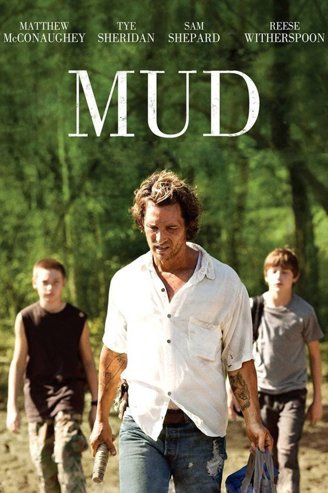
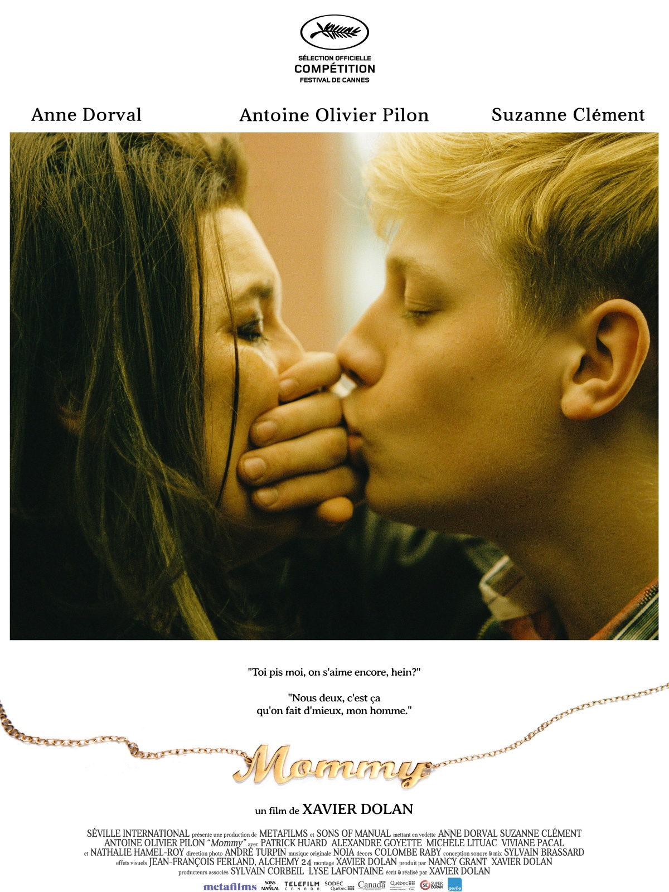

Olivier Lelong
Territorial project developer
Having helped firms to build their projects for many years, I'd like to startup a project of my own
Some films i liked in recent years
|

|
MudTwo 14-year-old boys in De Witt, Arkansas, Ellis (Tye Sheridan) and Neckbone (Jacob Lofland), have found a boat stuck high in a tree on a small island in the Arkansas River. They want to claim it for themselves but discover someone is living in it. They meet him, a strange man named Mud (Matthew McConaughey), who claims to have grown up nearby. He tells the boys that he needs food and promises to give them the boat if they help him while he stays on the island. |
|

|
MommyA widowed single mother, raising her violent son alone, finds new hope when a mysterious neighbor inserts herself into their household. |

|
Imitation gameBased on the real life story of legendary cryptanalyst Alan Turing, the film portrays the nail-biting race against time by Turing and his brilliant team of code-breakers at Britain's top-secret Government Code and Cypher School at Bletchley Park, during the darkest days of World War II. |